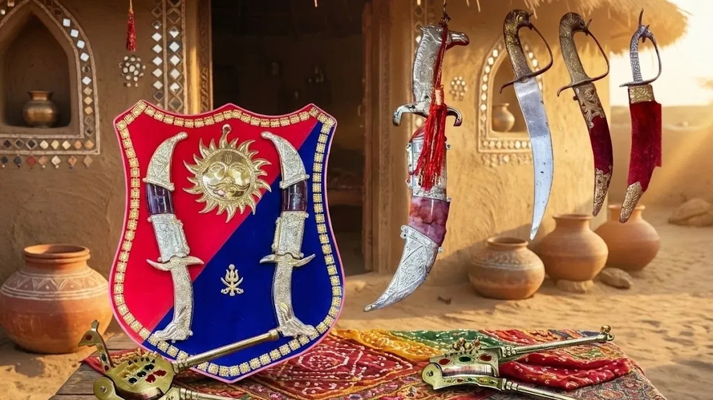
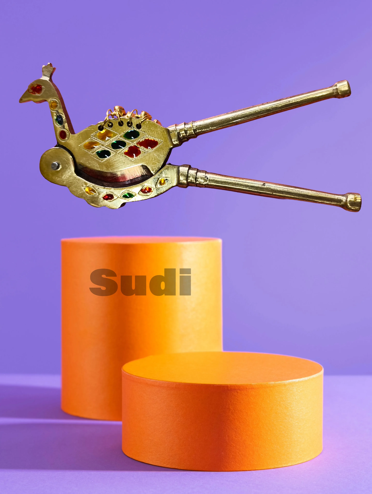
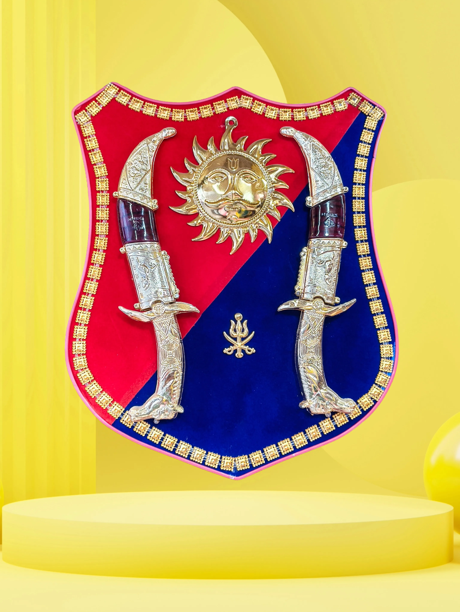

Sudi Chappu is the traditional knife-making craft of Anjar, a town in Kutch district with a 400-year-old legacy of forging exceptional blades. These aren't ordinary knives — Anjar blades are considered the sharpest traditional knives in Gujarat, prized by chefs, farmers, and collectors alike. Using traditional coal-fired furnaces and hand-forging techniques, each knife is a work of functional art. The handles, crafted from buffalo horn, rosewood, or sandalwood with brass inlay, are as beautiful as the blades are sharp.
Types of Knives
- Chappu: Curved blade knives — the most common and versatile.
- Sudi: Straight blade knives for precision cutting.
- Khanjar: Decorative daggers with ornate handles.
- Farming Knives: Heavy-duty blades for agricultural use.
- Kitchen Choppers: Traditional cooking knives.
Where to Buy
- Lohar Gali, Anjar: The knife-making street with multiple forges.
- Buy Direct from Forge: Best prices and authenticity guaranteed.
- Bhuj Contact: Opal Variety - 9825728452
- Custom Orders: Possible with specific requirements.
The Forging Process
From raw iron to functional art

Heating the Metal
Iron or steel is heated in a traditional coal-fired furnace until it glows red-hot. Manual bellows control the airflow for perfect heat.

Hammering the Blade
The metal is repeatedly hammered on an anvil — over 100 strikes per blade. This shapes the curve and achieves perfect thickness.

Tempering
The blade is heated and cooled multiple times to achieve the ideal hardness and flexibility. This gives Anjar knives their legendary durability.

Handle Craftsmanship
Handles are carved from buffalo horn, rosewood, or sandalwood. Fitted with brass rivets and often feature intricate inlay work.
Did You Know?
Sharpest in Gujarat
Anjar knives are considered the sharpest traditional knives in the state.
100+ Hammer Strikes
A single knife requires over 100 hammer strikes during forging.
Buffalo Horn Handles
Preferred because they don't slip when wet and stay cool in summer.
10+ Generations
Some knife-making families have practiced for over 10 generations.
Buying Tips
- Visit the Forge: Lohar Gali in Anjar for authentic pieces.
- Test Sharpness: A good blade cuts paper effortlessly.
- Check Balance: Weight should be even between blade and handle.
- Look for Hammer Marks: Sign of hand forging.
- Ask About Steel Type: Quality varies by material used.
Price Range
- Basic Utility Knives: ₹300 - ₹800
- Buffalo Horn Handle: ₹1,000 - ₹2,500
- Decorative Khanjar: ₹2,000 - ₹5,000
- Custom Collector Pieces: ₹5,000+
Care & Maintenance
- Keep Oiled: Apply mustard oil or food-safe oil to prevent rust.
- Store Dry: Keep in a leather sheath in a dry place.
- Sharpen Correctly: Use a whetstone at the correct angle.
- Clean After Use: Dry immediately — never put in dishwasher.
- Generational Quality: With proper care, lasts for generations.
Explore Other Crafts
Gallery